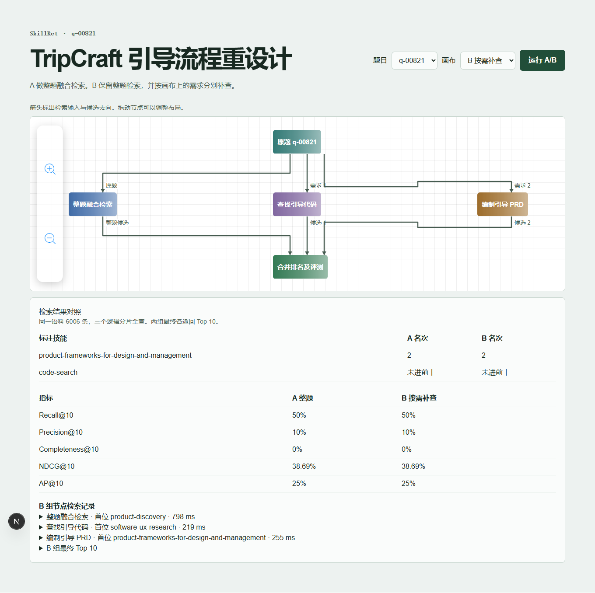

q-00821 TripCraft 引导流程重设计
产品框架技能在两组均排第 2。code-search 未进入整题和两条分支的候选前十。
A/B 指标
| 指标 | A 整题 | B 按需求补查 |
|---|
| Recall@10 | 50.00% | 50.00% |
| Precision@10 | 10.00% | 10.00% |
| Completeness@10 | 0.00% | 0.00% |
| NDCG@10 | 38.69% | 38.69% |
| AP@10 | 25.00% | 25.00% |
数据集标注技能的名次
| 标注技能 | A | B |
|---|
| product-frameworks-for-design-and-management | 2 | 2 |
| code-search | 未进前十 | 未进前十 |
原题与 B 组各节点
整题融合检索
We're redesigning the onboarding flow for "TripCraft," our React/TypeScript travel planning app, and I need help with two things. First, search our codebase under `src/onboarding/` to find all the existing step components and any A/B test configurations — I want to understand the current flow before proposing changes. Then, using what you find, help me write a PRD for the new onboarding experience. The current flow has 11 screens before a user can create their first trip, and our analytics show a 68% drop-off by screen 5. I want to apply Hick's Law and the Progressive Disclosure pattern to reduce cognitive load, use the RICE framework to prioritize which screens to cut vs. consolidate vs. keep, and structure the PRD with proper user stories in "As a [user], I want..." format. Also search for any existing usability test results or user research files in `docs/research/` so we can ground the redesign in actual data rather than assumptions. I'd like the final PRD to include a Kano Model classification of each onboarding element (must-have vs. delighter) and a checklist we can use for the usability testing round after implementation.
- product-discovery
- product-frameworks-for-design-and-management
- prd-generator
- vibe-prd
- ring:pre-dev-prd-creation
- ring:pre-dev-research
- product-management
- resonance-product
- pre-dev-prd-creation
- software-ux-research
查找引导代码
Locate existing React and TypeScript onboarding step components and A/B test configuration under src/onboarding, and usability tests and user research in docs/research. Return relevant files and the current flow.
- software-ux-research
- usability-tester
- Research Skill
- codebase-navigation
- react-project
- web-research-documenter
- codex-search
- ctx:researcher
- research-web
- research-web
编制引导 PRD
Design an onboarding PRD for a travel app with 11 screens and 68% drop-off by screen 5. Apply Hick's Law, progressive disclosure, RICE, Kano, user stories and an after-implementation usability checklist.
- product-frameworks-for-design-and-management
- prd-generator
- recovery-app-onboarding
- ring:pre-dev-prd-creation
- product-discovery
- prd-maker
- resonance-product
- ralph-tui-prd
- prd-facilitator
- vibe-prd
最终候选
A Top 10
- product-discovery
- product-frameworks-for-design-and-management
- prd-generator
- vibe-prd
- ring:pre-dev-prd-creation
- ring:pre-dev-research
- product-management
- resonance-product
- pre-dev-prd-creation
- software-ux-research
B Top 10
- product-discovery
- product-frameworks-for-design-and-management
- prd-generator
- software-ux-research
- usability-tester
- recovery-app-onboarding
- ring:pre-dev-prd-creation
- vibe-prd
- ring:pre-dev-research
- product-management
RSI 实测截图
